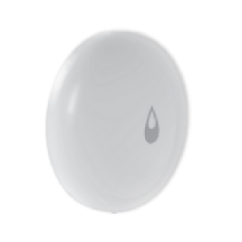
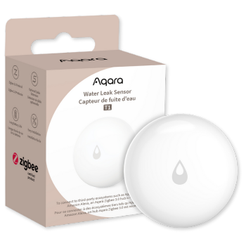

Water Leak Sensor T1
- The IP67-certified Leak Sensor detects water levels as low as 0.5mm and sends alert notifications or activates preset automations.
- Comes with screws for connecting wires (probes) to extend the detection area.
Historic Data Capture |
No Tools Needed |
Real Time Alert and Notification |
2-Year Battery Life |

Product Info
Description
The Aqara Water Leak Sensor T1 is a compact, reliable device designed to detect water leaks and help prevent costly water damage. This wireless sensor, compatible with Aqara's Zigbee 3.0 technology, can be placed in areas prone to leaks such as under sinks, near washing machines, and in basements. Upon detecting water, it instantly sends alerts via the Aqara Home app or compatible smart home platforms, enabling quick response to potential water hazards. The T1 model is also IP67-rated for dust and water resistance, ensuring durability even in humid environments, and it has a long-lasting battery life that provides low-maintenance, continuous monitoring.
Key Features
- Triggers Alarm & Notifications: Detects water leaks (0.5mm) and triggers the Aqara Hub alarm, sending push notifications to your phone.
- IP67 Waterproof & Dustproof: Built to withstand humid and dusty environments with an IP67 rating.
- Compact & Flexible Placement: Easy to place anywhere; coverage can be expanded with probe screws.
- Multi-Ecosystem Support: Integrates with Aqara Hub, Apple Home (Critical Alerts), Samsung SmartThings, and Yandex Smart Home.
- Aqara Home Automations: Customize smart home scenes, like triggering a smart plug to close a water valve when a leak is detected.
- Energy-Efficient & Durable: Anti-UV shell prevents discoloration, and battery lasts over 2 years with normal use.
- OTA Updates: Supports over-the-air updates, improving stability and functionality
Specifications
| Category | Hub |
| Colour | White |
| Model | WL-S02D |
| Battery | CR2032 |
| Wireless Protocol | Zigbee 3.0 |
| Dimensions | 50 × 50 × 15 mm (1.97 × 1.97 × 0.59 in.) |
| Operating Temperature | 0 °C ~ 55 °C (14 °F ~ 131 °F) |
| Operating Humidity | 0 – 100%RH |
| What's in the Box | Water Leak Sensor T1 × 1, User Manual × 1 |
Gallery
|  |  | |
| Front Image | Side Image | Product Box |
Automations and Complementary Products
Water Leak alert
When the Aqara Water Leak Sensor detects a leak, it triggers an Aqara Smart Curtain to open or flashes Aqara Smart Lights to visually alert you. You will also receive notifications on the Aqara Home app.
| Required Automation Products: | Water Leak Sensor T1 |
 Hub M3 |
 Ceiling Light T1M |
 Roller Shade Driver |
Adjust environment if a leak is detected.
When the Aqara Water Leak Sensor detects a leak, it adjusts the environment to minimize potential damage by reducing humidity levels or turning off the heating system.
| Required Automation Products: | Water Leak Sensor T1 |
Hub M3 |
 Temperature and Humidity Sensor |
IR Enabled Heatpump |
Product Support Documents
- Step by step installation instruction video (runtime 00:02:36): Installation Video
- Product User Manual (format PDF): User Manual
- Product FAQs (format PDF): Frequently Asked Questions